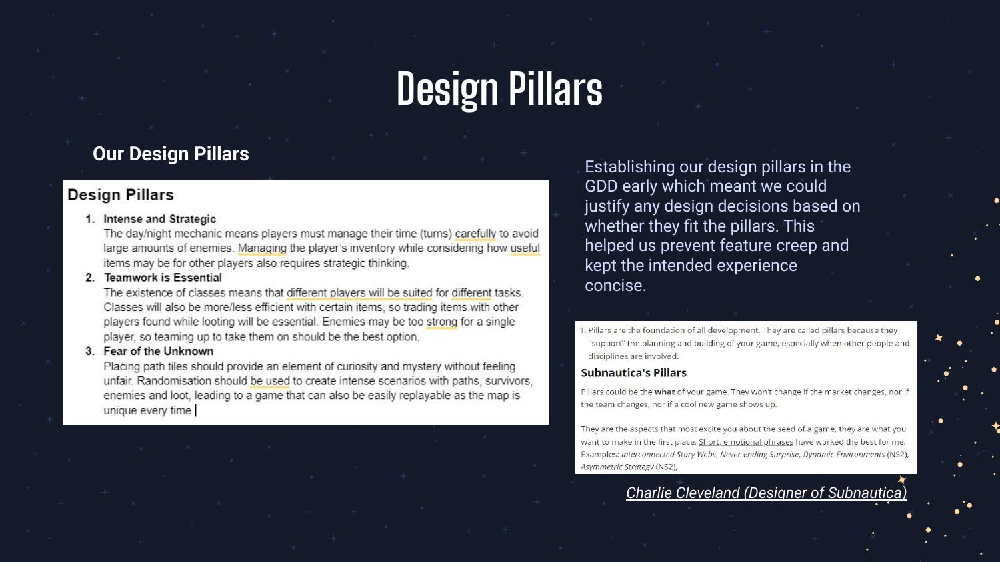
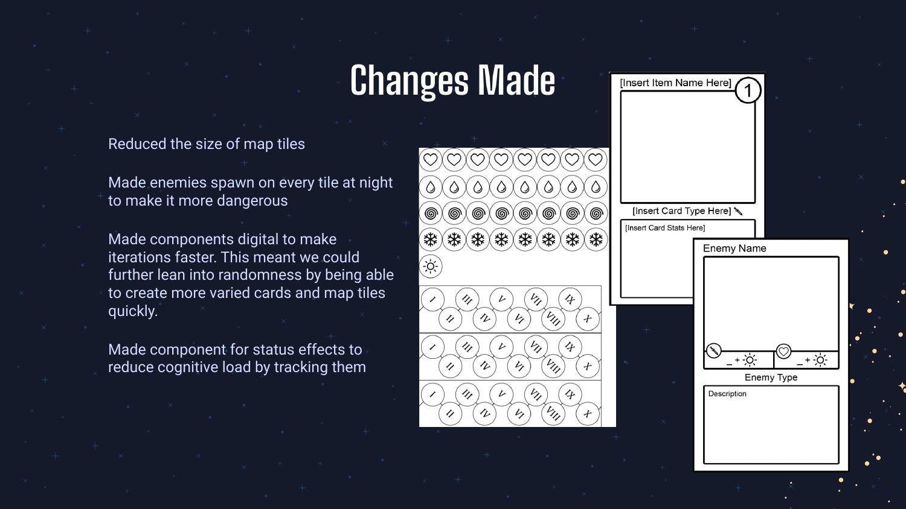
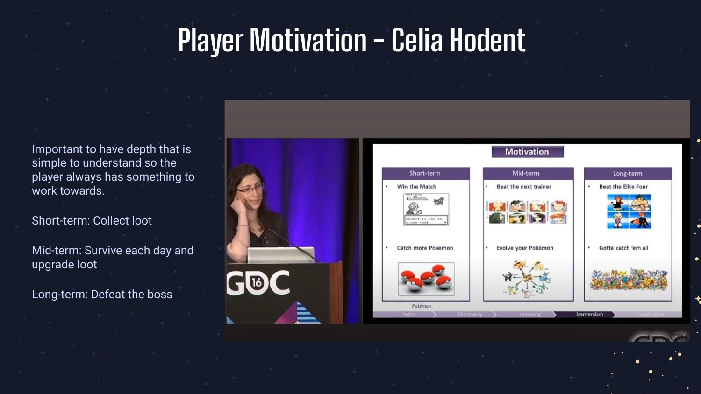
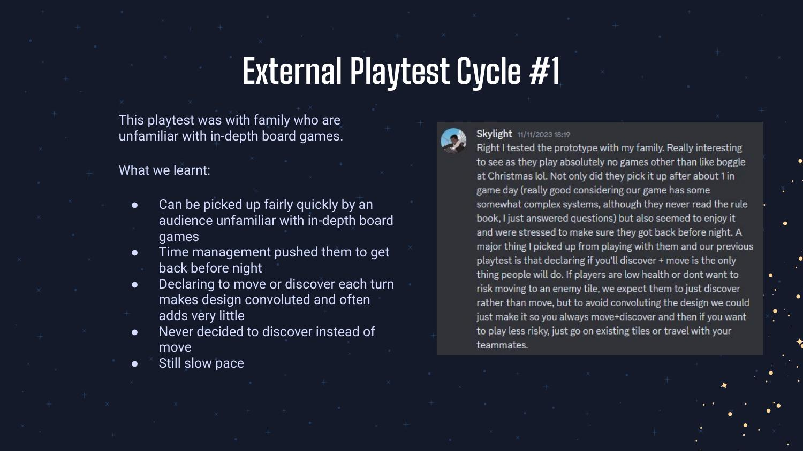
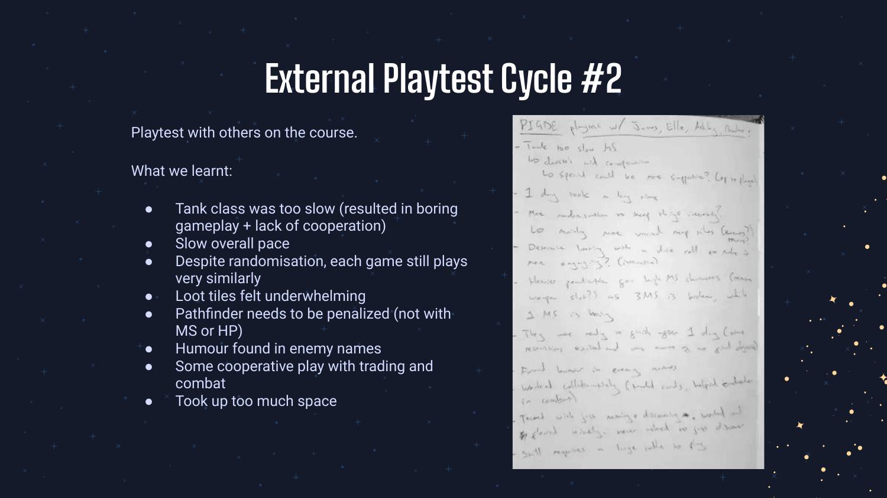
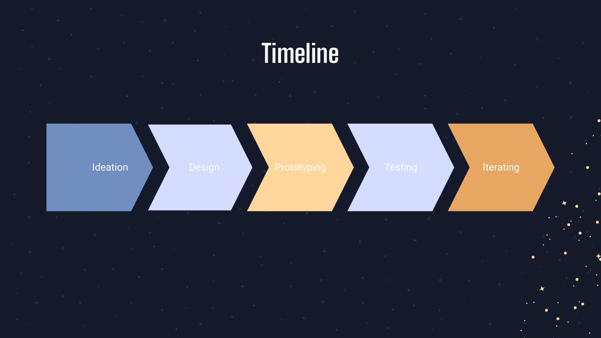

GAME DESIGN · ENCOUNTERS, MAPS & ITERATION
Shatterfall
A cooperative sci-fi survival game built on tile-based maps, made with a team of four. I worked on the map layouts, encounter pacing, and difficulty — and helped drive the design through two full playtest-and-iterate cycles.
// Strong draft built from your design deck. Swap in your exact individual contribution where noted, and it's ready.
Overview
Shatterfall is a cooperative, time-pressured survival game played across a randomised, tile-based map. Players manage limited turns, scavenge and combine items, and pick classes with distinct strengths — and the map itself gets more hostile as the clock runs down.
We built it the fast, honest way: a game design document, a paper prototype, and repeated playtests that we used to tear the design down and rebuild it. My focus was the part of the experience a level designer owns — how the space is laid out, how encounters are paced, and how difficulty escalates.
Design pillars
We set our pillars early in the GDD so every later decision could be judged against them — a method I borrowed from Subnautica's Charlie Cleveland to prevent feature creep and keep the experience focused.

Level & encounter design
The map is the game. I worked on the tile-based layouts and the rules that govern them, tuning the space and the threat together:
- Reduced the map-tile size to tighten the play space and force players into contact rather than letting them sprawl.
- Made enemies spawn on every tile at night, so the map turns hostile as time runs out — escalating danger through the space itself, not just numbers on a card.
- Added a status-effect component to cut cognitive load, so players track threats at a glance and keep moving.
- Moved components digital-first so we could generate more varied cards and map tiles quickly and iterate between playtests.

Pacing & player motivation
I designed the reward loop around short-, mid-, and long-term goals (after Celia Hodent's GDC work) so the player always has something immediate to chase and something larger to fear — collect loot now, survive the day, defeat the threat.

Iteration & playtesting
This is the part I'd point a level-design lead to. We ran two external playtest cycles, took the feedback seriously, and were willing to restart with a new perspective each time rather than defend what we'd built.
- Cycle 1 showed the move/discover mechanic was convoluted and the pace was slow — players got stressed about losing progress. We cut and simplified.
- Cycle 2 exposed a too-slow tank class, underwhelming loot tiles, and maps that played too similarly despite randomisation — so we retuned classes, loot, and tile variety.



Why it maps to level design
Shatterfall is on a tabletop, but the work is the work a level designer does in an engine: laying out a space, pacing encounters, escalating difficulty, and rebuilding it all from playtest feedback. The reference points — D&D, Subnautica, layered survival loops — are the same vocabulary I'd bring to a narrative-driven RPG.